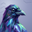
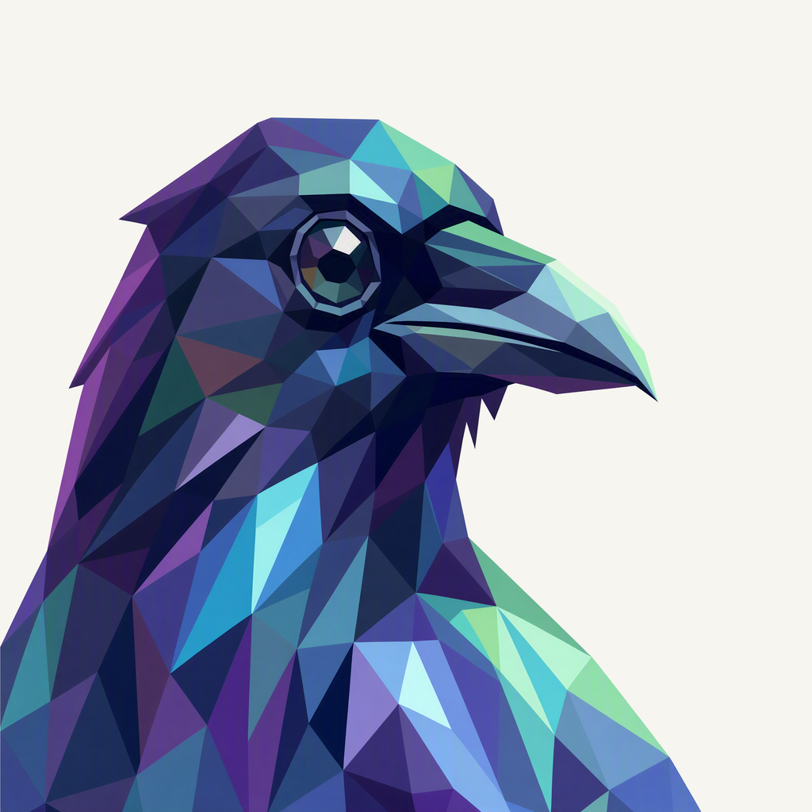
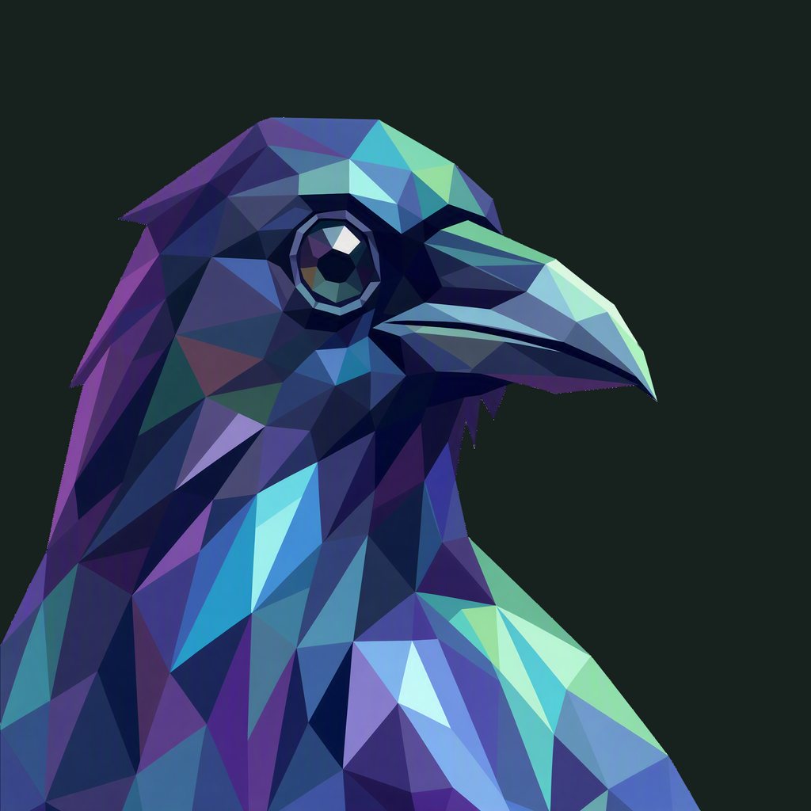

01 / Composition
A profile that enters the frame
The long projecting beak balances the rear feather mass. The neck enters naturally from the left and lower edges, while the crown, eye, and beak keep a clear rounded-square margin.
Animal family · Selected Raven study
An indigo profile with a long angular beak and a natural entrance from the edge.
Withdrawn before publication · finishing 02
Native 2048 × 2048
01 / Composition
The long projecting beak balances the rear feather mass. The neck enters naturally from the left and lower edges, while the crown, eye, and beak keep a clear rounded-square margin.
02 / Drawing
Broad indigo planes retain the original profile, with cyan, mint, and violet flashes across the feathers. The faceted eye remains the focal point; the existing projecting beak supplies the outward gesture.
03 / Presentation
Offset angular feather vanes cross a cool dusk-blue field. Their quiet relief and soft shadow give the dark portrait separation without adding another object to the mark.
The same artwork at actual display sizes.

At 32 px, the long beak and indigo-cyan feather planes remain readable. At 16 px, the eye facets and smaller feather divisions merge into the profile.
A distinct presentation field, with colors sampled from the native raven artwork.
Select a swatch to copy its hex value. Raven’s existing site primary, #6341C8, remains a separate UI color.
One foreground, checked on two contrasting backgrounds.


Azure Foundry · gpt-image-2 · native 2048 × 2048
Loading prompt…


{kind=link}
{kind=link}
{kind=link}
{kind=link}
{kind=link}